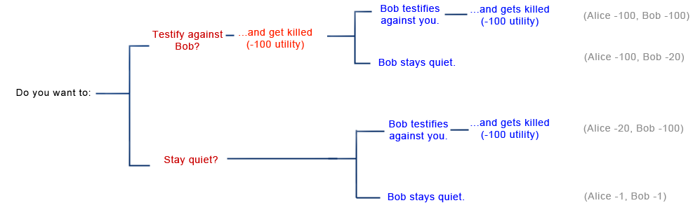
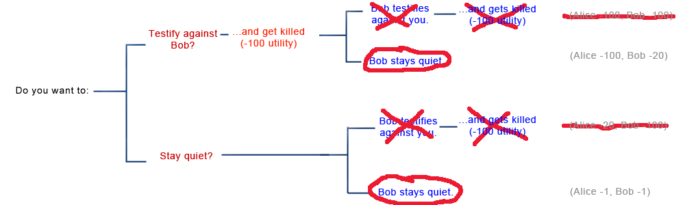

Real World Solutions to Prisoners' Dilemmas
Why should there be real world solutions to Prisoners' Dilemmas? Because such dilemmas are a real-world problem.
If I am assigned to work on a school project with a group, I can either cooperate (work hard on the project) or defect (slack off while reaping the rewards of everyone else's hard work). If everyone defects, the project doesn't get done and we all fail - a bad outcome for everyone. If I defect but you cooperate, then I get to spend all day on the beach and still get a good grade - the best outcome for me, the worst for you. And if we all cooperate, then it's long hours in the library but at least we pass the class - a “good enough” outcome, though not quite as good as me defecting against everyone else's cooperation. This exactly mirrors the Prisoner's Dilemma.
Diplomacy - both the concept and the board game - involves Prisoners' Dilemmas. Suppose Ribbentrop of Germany and Molotov of Russia agree to a peace treaty that demilitarizes their mutual border. If both cooperate, they can move their forces to other theaters, and have moderate success there - a good enough outcome. If Russia cooperates but Germany defects, it can launch a surprise attack on an undefended Russian border and enjoy spectacular success there (for a while, at least!) - the best outcome for Germany and the worst for Russia. But if both defect, then neither has any advantage at the German-Russian border, and they lose the use of those troops in other theaters as well - a bad outcome for both. Again, the Prisoner's Dilemma.
Civilization - again, both the concept and the game - involves Prisoners' Dilemmas. If everyone follows the rules and creates a stable society (cooperates), we all do pretty well. If everyone else works hard and I turn barbarian and pillage you (defect), then I get all of your stuff without having to work for it and you get nothing - the best solution for me, the worst for you. If everyone becomes a barbarian, there's nothing to steal and we all lose out. Prisoner's Dilemma.
If everyone who worries about global warming cooperates in cutting emissions, climate change is averted and everyone is moderately happy. If everyone else cooperates in cutting emissions, but one country defects, climate change is still mostly averted, and the defector is at a significant economic advantage. If everyone defects and keeps polluting, the climate changes and everyone loses out. Again a Prisoner's Dilemma,
Prisoners' Dilemmas even come up in nature. In baboon tribes, when a female is in “heat”, males often compete for the chance to woo her. The most successful males are those who can get a friend to help fight off the other monkeys, and who then helps that friend find his own monkey loving. But these monkeys are tempted to take their friend's female as well. Two males who cooperate each seduce one female. If one cooperates and the other defects, he has a good chance at both females. But if the two can't cooperate at all, then they will be beaten off by other monkey alliances and won't get to have sex with anyone. Still a Prisoner's Dilemma!
So one might expect the real world to have produced some practical solutions to Prisoners' Dilemmas.
One of the best known such systems is called “society”. You may have heard of it. It boasts a series of norms, laws, and authority figures who will punish you when those norms and laws are broken.
Imagine that the two criminals in the original example were part of a criminal society - let's say the Mafia. The Godfather makes Alice and Bob an offer they can't refuse: turn against one another, and they will end up “sleeping with the fishes” (this concludes my knowledge of the Mafia). Now the incentives are changed: defecting against a cooperator doesn't mean walking free, it means getting murdered.


Both prisoners cooperate, and amazingly the threat of murder ends up making them both better off (this is also the gist of some of the strongest arguments against libertarianism: in Prisoner's Dilemmas, threatening force against rational agents can increase the utility of all of them!)
Even when there is no godfather, society binds people by concern about their “reputation”. If Bob got a reputation as a snitch, he might never be able to work as a criminal again. If a student gets a reputation for slacking off on projects, she might get ostracized on the playground. If a country gets a reputation for backstabbing, others might refuse to make treaties with them. If a person gets a reputation as a bandit, she might incur the hostility of those around her. If a country gets a reputation for not doing enough to fight global warming, it might...well, no one ever said it was a perfect system.
Aside from humans in society, evolution is also strongly motivated to develop a solution to the Prisoner's Dilemma. The Dilemma troubles not only lovestruck baboons, but ants, minnows, bats, and even viruses. Here the payoff is denominated not in years of jail time, nor in dollars, but in reproductive fitness and number of potential offspring - so evolution will certainly take note.
Most people, when they hear the rational arguments in favor of defecting every single time on the iterated 100-crime Prisoner's Dilemma, will feel some kind of emotional resistance. Thoughts like “Well, maybe I'll try cooperating anyway a few times, see if it works”, or “If I promised to cooperate with my opponent, then it would be dishonorable for me to defect on the last turn, even if it helps me out., or even “Bob is my friend! Think of all the good times we've had together, robbing banks and running straight into waiting police cordons. I could never betray him!”
And if two people with these sorts of emotional hangups play the Prisoner's Dilemma together, they'll end up cooperating on all hundred crimes, getting out of jail in a mere century and leaving rational utility maximizers to sit back and wonder how they did it.
Here's how: imagine you are a supervillain designing a robotic criminal (who's that go-to supervillain Kaj always uses for situations like this? Dr. Zany? Okay, let's say you're him). You expect to build several copies of this robot to work as a team, and expect they might end up playing the Prisoner's Dilemma against each other. You want them out of jail as fast as possible so they can get back to furthering your nefarious plots. So rather than have them bumble through the whole rational utility maximizing thing, you just insert an extra line of code: “in a Prisoner's Dilemma, always cooperate with other robots”. Problem solved.
Evolution followed the same strategy (no it didn't; this is a massive oversimplification). The emotions we feel around friendship, trust, altruism, and betrayal are partly a built-in hack to succeed in cooperating on Prisoner's Dilemmas where a rational utility-maximizer would defect a hundred times and fail miserably. The evolutionarily dominant strategy is commonly called “Tit-for-tat” - basically, cooperate if and only if your opponent did so last time.
This so-called "superrationality” appears even more clearly in the Ultimatum Game. Two players are given $100 to distribute among themselves in the following way: the first player proposes a distribution (for example, “Fifty for me, fifty for you”) and then the second player either accepts or rejects the distribution. If the second player accepts, the players get the money in that particular ratio. If the second player refuses, no one gets any money at all.
The first player's reasoning goes like this: “If I propose $99 for myself and $1 for my opponent, that means I get a lot of money and my opponent still has to accept. After all, she prefers $1 to $0, which is what she'll get if she refuses.
In the Prisoner's Dilemma, when players were able to communicate beforehand they could settle upon a winning strategy of precommiting to reciprocate: to take an action beneficial to their opponent if and only if their opponent took an action beneficial to them. Here, the second player should consider the same strategy: precommit to an ultimatum (hence the name) that unless Player 1 distributes the money 50-50, she will reject the offer.
But as in the Prisoner's Dilemma, this fails when you have no reason to expect your opponent to follow through on her precommitment. Imagine you're Player 2, playing a single Ultimatum Game against an opponent you never expect to meet again. You dutifully promise Player 1 that you will reject any offer less than 50-50. Player 1 offers 80-20 anyway. You reason “Well, my ultimatum failed. If I stick to it anyway, I walk away with nothing. I might as well admit it was a good try, give in, and take the $20. After all, rejecting the offer won't magically bring my chance at $50 back, and there aren't any other dealings with this Player 1 guy for it to influence.”
This is seemingly a rational way to think, but if Player 1 knows you're going to think that way, she offers 99-1, same as before, no matter how sincere your ultimatum sounds.
Notice all the similarities to the Prisoner's Dilemma: playing as a "rational economic agent" gets you a bad result, it looks like you can escape that bad result by making precommitments, but since the other player can't trust your precommitments, you're right back where you started
If evolutionary solutions to the Prisoners' Dilemma look like trust or friendship or altruism, solutions to the Ultimatum Game involve different emotions entirely. The Sultan presumably does not want you to elope with his daughter. He makes an ultimatum: “Touch my daughter, and I will kill you.” You elope with her anyway, and when his guards drag you back to his palace, you argue: “Killing me isn't going to reverse what happened. Your ultimatum has failed. All you can do now by beheading me is get blood all over your beautiful palace carpet, which hurts you as well as me - the equivalent of pointlessly passing up the last dollar in an Ultimatum Game where you've just been offered a 99-1 split.”
The Sultan might counter with an argument from social institutions: “If I let you go, I will look dishonorable. I will gain a reputation as someone people can mess with without any consequences. My choice isn't between bloody carpet and clean carpet, it's between bloody carpet and people respecting my orders, or clean carpet and people continuing to defy me.”
But he's much more likely to just shout an incoherent stream of dreadful Arabic curse words. Because just as friendship is the evolutionary solution to a Prisoner's Dilemma, so anger is the evolutionary solution to an Ultimatum Game. As various gurus and psychologists have observed, anger makes us irrational. But this is the good kind of irrationality; it's the kind of irrationality that makes us pass up a 99-1 split even though the decision costs us a dollar.
And if we know that humans are the kind of life-form that tends to experience anger, then if we're playing an Ultimatum Game against a human, and that human precommits to rejecting any offer less than 50-50, we're much more likely to believe her than if we were playing against a rational utility-maximizing agent - and so much more likely to give the human a fair offer.
It is distasteful and a little bit contradictory to the spirit of rationality to believe it should lose out so badly to simple emotion, and the problem might be correctable. Here we risk crossing the poorly charted border between game theory and decision theory and reaching ideas like timeless decision theory: that one should act as if one's choices determined the output of the algorithm one instantiates (or more simply, you should assume everyone like you will make the same choice you do, and take that into account when choosing.)
More practically, however, most real-world solutions to Prisoner's Dilemmas and Ultimatum Games still hinge on one of three things: threats of reciprocation when the length of the game is unknown, social institutions and reputation systems that make defection less attractive, and emotions ranging from cooperation to anger that are hard-wired into us by evolution. In the next post, we'll look at how these play out in practice.
 Loading…
Loading…
>We observe that politicians are happy to cut taxes (for people who can benefit them) if they personally get paid as much or more than before. Why would it be otherwise? Having the ability to take and redistribute someone else's money provides a concentrated benefit to the one doing the taking and redistributing. Cutting taxes produces a much more diffuse benefit. Concentrated benefits lead to Machiavellian behavior much more than diffuse benefits. It is possible, of course, to have an anti-taxes lobbying group which provides a concentrated benefit, but the overall balance between concentrated and diffuse benefits is on the side of the higher taxes. >(And any long-term interest, eg power for their family, should take the state of their civilization into account.) That would be a diffuse cost. The politician may care about the portion of the diffuse effectthat affects his family, but that's only a small portion of the total. If the politician makes policy based on which costs help him and his family and which ones hurt him and his family, the concentrated ones will win. The ones that affect all civilization, a small portion of which he actually cares about because it goes to his family, will lose.
by Jiro on Argument Screens Off Authority | 0 points